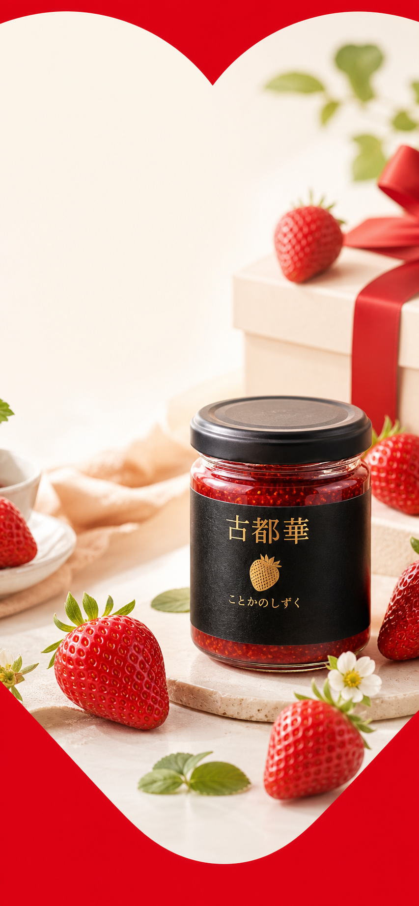
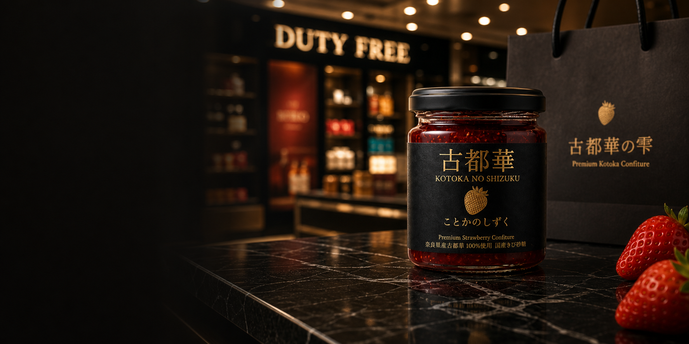

深い甘み
古都華らしい濃い甘みを、重たくならない後味へ。
Premium Kotoka Confiture
奈良が誇る苺、古都華。
その甘み、酸味、香りを、
一年中味わえる一瓶へ。
奈良の価値を世界へ届ける、プレミアムコンフィチュール。
Chapter 01
古都華は、奈良県産のブランド苺。濃い甘み、凛とした酸味、華やかな香りをあわせ持つ、 奈良を代表する果実です。
その旬の短い魅力を、一年中楽しめる形へ。古都華の雫は、古都華を100%使用した プレミアムコンフィチュールです。

Chapter 02



古都華らしい濃い甘みを、重たくならない後味へ。
華やかな赤い果実に、輪郭を与える美しい酸味。
ひと匙で、古都華の香りが静かに広がります。
バニラアイスにひと匙。冷たい乳脂に、古都華の香りがすっと立ち上がります。
鴨や豚のローストに。赤ワインやバルサミコと合わせ、果実の甘酸で脂をきれいに締めます。

Chapter 03
生食とは異なる旨みを、加工によって引き出す。古都華の雫は、その考えから生まれた一品です。
保存料は使わず、香料としてバニラエッセンスのみを使用。糖度は38度前後に抑え、 果実の香りと酸味が立ち上がるよう仕立てています。
Chapter 04
免税店、百貨店、特約店を中心に展開を想定した、奈良発のラグジュアリーギフト。 訪日のお土産にも、大切な方への贈りものにもふさわしい佇まいを目指しました。
Online / Contact
オンライン購入、ギフト、特約店でのお取扱いについては、準備が整い次第こちらでご案内します。